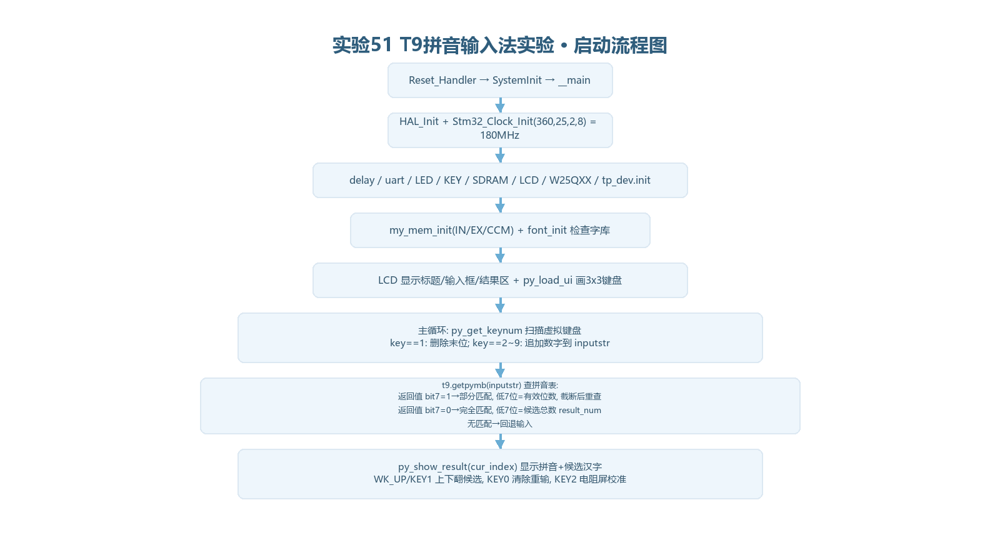
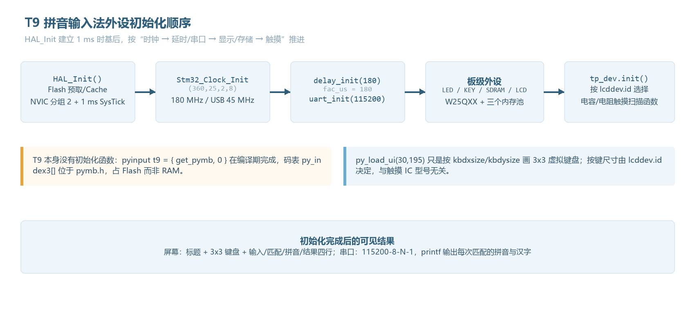
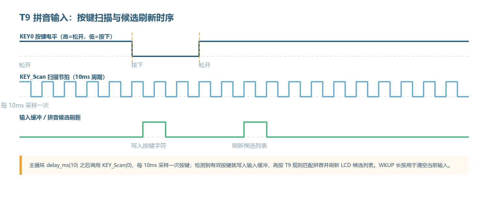
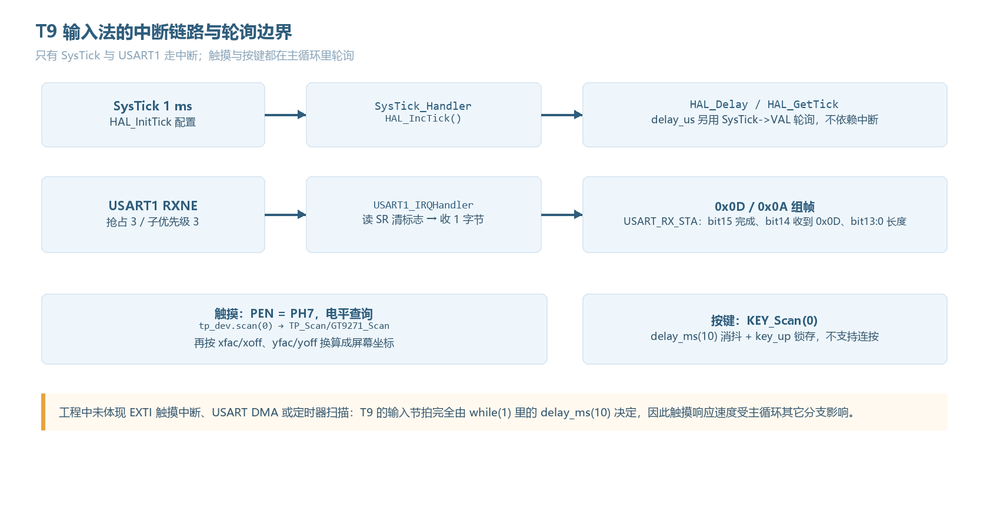

01 实验目标与硬件资源
实验51 把“九宫格输入法”搬到 STM32F429 开发板上：屏幕画出 9 个按键，每个按键同时显示数字和字母（2=abc、3=def……9=wxyz），触摸按键后把数字拼成字符串（例如“726”），再用这张数字串到预置的拼音码表 py_index3[] 中做前缀匹配，最后把匹配到的拼音与汉字显示出来。整个过程没有联网、没有词典文件，码表是编译进 Flash 的常量数组。
与相邻的实验50 手写识别相比，本实验的难点不在“识别算法”，而在字符串匹配与状态机：输入串怎么增长/删除、完全匹配与部分匹配如何区分、候选索引怎么循环翻页、触摸按住不放为什么不能连续触发。把这些状态讲清楚，T9 就通了。
| 资源 | 配置 | 在本实验中的作用 |
|---|---|---|
| 系统时钟 | Stm32_Clock_Init(360,25,2,8) → 180 MHz | 主循环节拍、延时、LCD 刷新 |
| LED0 / LED1 | PB1 / PB0，推挽输出 | LED0 每 30 次循环翻转，作为运行心跳 |
| 按键 | KEY0=PH3、KEY1=PH2、KEY2=PC13、WK_UP=PA0 | 上翻、下翻、清除、电阻屏校准 |
| 触摸屏 | 电阻屏 SPI（PEN=PH7、TCLK=PH6、TDIN=PI3、TCS=PI8）或电容屏 IIC | 产生 9 个虚拟按键的坐标 |
| LCD | 按 lcddev.id 适配 3.5/4.3/7 寸等面板 | 画键盘、显示输入串与候选结果 |
| 串口1 | PA9/PA10，115200-8-N-1 | 打印当前拼音与命中汉字，便于观察匹配 |
| 码表 | py_index3[]（pymb.h 常量） | 数字串 → 拼音 → 汉字串 |
py_index3[] 里一个数字串可能对应多个拼音（如“26”同时是 an、ao、bo），所以必须用候选索引翻页查看。02 目录与文件分工
| 文件 | 职责 | 本页关注点 |
|---|---|---|
USER/main.c | 初始化、虚拟键盘绘制、输入状态机、按键翻页 | 输入串如何增长/回退，部分匹配如何截断 |
T9INPUT/pyinput.c | str_match、get_matched_pymb、get_pymb | 完全匹配 0xFF、部分匹配位数的编码 |
T9INPUT/pyinput.h | py_index、pyinput 两个结构体 | pymb[10] 候选指针数组 |
T9INPUT/pymb.h | 汉字串常量与 py_index3[] 索引表 | “拼音 → 汉字串”的静态映射 |
SYSTEM/sys/sys.c | Stm32_Clock_Init、MSR_MSP、INTX_DISABLE | 180 MHz 与 PLLQ=8 的来历 |
SYSTEM/delay/delay.c | delay_init、delay_us、delay_ms | 用 SysTick->VAL 轮询实现微秒延时 |
SYSTEM/usart/usart.c | USART1 初始化、接收中断、fputc 重定向 | printf 为什么能直接输出到串口 |
HARDWARE/TOUCH/touch.c | TP_Init、TP_Scan 与各触摸 IC 驱动 | 电阻屏/电容屏的函数指针切换 |
HARDWARE/KEY/key.c | KEY_Init、KEY_Scan | 10 ms 消抖与 key_up 锁存 |
HARDWARE/LCD/lcd.c | LCD_Init、Show_Str、LCD_ShowNum | 候选结果的显示与清屏 |
CORE/startup_stm32f429xx.s | 向量表、Reset_Handler、栈/堆 | 复位后第一条指令与 MSP 的来源 |
T9INPUT 目录里还有一个更大的 t9input.c（带编辑框、标点、手写切换的完整输入法界面），但本实验的 main.c 并没有调用它，实际只使用 pyinput.c 提供的检索函数。读代码时不要被未参与编译的界面代码带偏。
03 启动流程总览

启动顺序不是“随便排”的：HAL_Init() 必须最先执行，因为它配置 Flash 预取、NVIC 优先级分组并建立 1 ms SysTick；Stm32_Clock_Init() 把主频抬到 180 MHz 后，delay_init(180) 才能用正确的 fac_us 计算延时；LCD、SDRAM、W25QXX、触摸都依赖已经稳定的时钟和延时。
int main(void)
{
u8 i = 0;
u8 result_num; // 当前输入串的候选总数
u8 cur_index; // 当前显示第几条候选（1 起）
u8 key;
u8 inputstr[7]; // 最大 6 个数字 + 结束符
u8 inputlen; // 当前有效数字个数
HAL_Init(); // Flash 预取/Cache、NVIC 分组 2、1 ms SysTick
Stm32_Clock_Init(360,25,2,8); // HSE 25 MHz → SYSCLK 180 MHz
delay_init(180); // fac_us = 180，供 delay_us 使用
uart_init(115200); // USART1，PA9/PA10
LED_Init(); // PB0/PB1
KEY_Init(); // PA0/PC13/PH2/PH3
SDRAM_Init(); // 外部 SDRAM，供 LCD 显存与内存池
LCD_Init(); // 读 ID 后决定分辨率与驱动
W25QXX_Init(); // 外部 SPI Flash，字库来源
tp_dev.init(); // 函数指针，按屏幕型号选触摸驱动
my_mem_init(SRAMIN); // 内部 SRAM 内存池
my_mem_init(SRAMEX); // 外部 SDRAM 内存池
my_mem_init(SRAMCCM); // CCM 内存池
RESTART:
POINT_COLOR = RED;
while (font_init()) // 字库没准备好就一直重试
{
LCD_ShowString(60,50,200,16,16,"Font Error!");
delay_ms(200);
LCD_Fill(60,50,240,66,WHITE);
}
// …省略标题、操作提示与 py_load_ui(30,195) 的界面绘制…
memset(inputstr,0,7); // 清空输入串
inputlen = 0;
result_num = 0;
cur_index = 0;
while (1)
{
i++;
delay_ms(10); // 主循环节拍约 10 ms
key = py_get_keynum(30,195);// 触摸键盘扫描
// …省略输入、匹配、显示与按键翻页，见第 08、10 节…
}
}
- 为什么 HAL_Init 在最前：它打开 Flash 指令/数据 Cache 与预取，并把 SysTick 配成 1 ms。后面
HAL_Delay、HAL_GetTick、HAL 驱动的超时判断都依赖这个节拍。 - 为什么 LCD 在触摸之前：
TP_Init要用lcddev.id判断是电阻屏还是电容屏，还要用lcddev.dir记录横竖屏方向；LCD 没初始化时这两个值没有意义。 - 为什么有 RESTART 标号：KEY2 校准或 KEY0 清除后需要回到“重新画键盘、清空输入”的初始状态，用
goto RESTART比复制一大段初始化代码更直接。 - 字库重试：
font_init()失败时只清掉提示区域并延时 200 ms，不继续往下走；否则后面Show_Str会读到未初始化的字库。 - 主循环节拍：
delay_ms(10)决定触摸采样率约 100 Hz；但这个延时是阻塞的，所以按键、串口接收、LCD 刷新之间会相互影响。
04 启动文件与向量表
startup_stm32f429xx.s 定义了两个段：STACK 与 HEAP，大小分别是 0x400（1 KB）和 0x200（512 B）。向量表的第 0 项是 __initial_sp，第 1 项是 Reset_Handler；Cortex-M4 复位时自动把这两项装入 MSP 与 PC。
Stack_Size EQU 0x400; // 1 KB 主栈 AREA STACK, NOINIT, READWRITE, ALIGN=3 Stack_Mem SPACE Stack_Size __initial_sp // 栈顶地址，向量表第 0 项 Heap_Size EQU 0x200; // 512 B 堆，本实验基本不用 malloc AREA HEAP, NOINIT, READWRITE, ALIGN=3 __heap_base Heap_Mem SPACE Heap_Size __heap_limit AREA RESET, DATA, READONLY DCD __initial_sp // 0x08000000：初始 MSP DCD Reset_Handler // 0x08000004：复位入口 DCD NMI_Handler DCD HardFault_Handler // …省略其余异常与外设中断向量… Reset_Handler PROC EXPORT Reset_Handler [WEAK] IMPORT SystemInit IMPORT __main LDR R0, =SystemInit BLX R0 // 先执行 SystemInit LDR R0, =__main BX R0 // 再由 C 库 __main 建栈/搬 .data/清 .bss ENDP
- MSP 从哪来：复位时内核从向量表第 0 项取 4 字节写入 MSP，所以
__initial_sp必须指向 RAM 的合法栈顶；本工程栈只有 1 KB，深递归或大局部数组要特别小心。 - 为什么是 SystemInit → __main：
SystemInit只做内核与 RCC 复位、FPU 使能、VTOR 设置；真正的.data复制和.bss清零由 C 库的__main完成，不能直接跳到main。 - WEAK 的作用：启动文件把每个中断都声明成弱符号，
stm32f4xx_it.c或外设驱动里定义同名函数即可覆盖；没覆盖时落到默认死循环，便于发现“中断进了但没有处理函数”。 - VTOR：
SystemInit末尾执行SCB->VTOR = FLASH_BASE | VECT_TAB_OFFSET，本工程偏移为0x00，所以向量表仍指向 0x08000000。 - 堆的意义：本实验使用
my_mem_init管理自己的内存池，不走malloc；Heap_Size只是保留给 C 库，实际几乎不用。
05 SystemInit 与 HAL_Init
很多人以为 SystemInit 会把时钟配到 180 MHz，其实它只把 RCC 恢复到复位状态，真正的 PLL 配置在 Stm32_Clock_Init 里。下面这段代码来自 USER/system_stm32f4xx.c，重点看 FPU 与 VTOR 两处。
void SystemInit(void)
{
#if (__FPU_PRESENT == 1) && (__FPU_USED == 1)
SCB->CPACR |= ((3UL << 10*2)|(3UL << 11*2)); // CP10/CP11 全访问，开启 FPU
#endif
RCC->CR |= (uint32_t)0x00000001; // 打开 HSION
RCC->CFGR = 0x00000000; // 时钟源回到 HSI，分频清零
RCC->CR &= (uint32_t)0xFEF6FFFF; // 关 HSEON/CSSON/PLLON
RCC->PLLCFGR = 0x24003010; // PLLCFGR 复位值
RCC->CR &= (uint32_t)0xFFFBFFFF; // 清 HSEBYP
RCC->CIR = 0x00000000; // 关闭所有 RCC 中断
// …省略 DATA_IN_ExtSRAM/ExtSDRAM 条件编译…
SCB->VTOR = FLASH_BASE | VECT_TAB_OFFSET; // 向量表仍在 0x08000000
}
HAL_Init() 在 stm32f4xx_hal.c 中，依次做 Flash 预取、指令/数据 Cache、NVIC 优先级分组、1 ms SysTick 和 HAL_MspInit。注意优先级分组被固定为 2，这决定了后面 USART1 的“抢占 3 / 子优先级 3”如何解释。
HAL_StatusTypeDef HAL_Init(void)
{
#if (INSTRUCTION_CACHE_ENABLE != 0)
__HAL_FLASH_INSTRUCTION_CACHE_ENABLE(); // 指令 Cache
#endif
#if (DATA_CACHE_ENABLE != 0)
__HAL_FLASH_DATA_CACHE_ENABLE(); // 数据 Cache
#endif
#if (PREFETCH_ENABLE != 0)
__HAL_FLASH_PREFETCH_BUFFER_ENABLE(); // 预取缓冲
#endif
HAL_NVIC_SetPriorityGrouping(NVIC_PRIORITYGROUP_2); // 2 位抢占 + 2 位子优先级
HAL_InitTick(TICK_INT_PRIORITY); // 建立 1 ms 时基
HAL_MspInit(); // 全局底层初始化（本工程为空实现）
return HAL_OK;
}
__weak HAL_StatusTypeDef HAL_InitTick(uint32_t TickPriority)
{
HAL_SYSTICK_Config(HAL_RCC_GetHCLKFreq()/1000); // 180 MHz / 1000 = 180000 个 HCLK
HAL_NVIC_SetPriority(SysTick_IRQn, TickPriority, 0);
return HAL_OK;
}
- FPU 必须显式开：Cortex-M4 复位后 CP10/CP11 是禁止访问的，不写
CPACR就使用浮点指令会进 HardFault。本实验的lcddev.xfac等校准系数是浮点，必须开。 - SystemInit 不配 PLL：它把 RCC 恢复到 HSI 16 MHz 的复位状态，所以紧接着必须调用
Stm32_Clock_Init，否则主频只有 16 MHz，延时和波特率都会偏。 - HAL_InitTick 的除数：
HAL_RCC_GetHCLKFreq()/1000得到 1 ms 需要的计数。此时时钟还是 HSI，所以第一次装的是 16000；Stm32_Clock_Init之后 HAL 会再次更新，最终按 180 MHz 计算。 - 优先级分组 2：4 位优先级里高 2 位是抢占优先级、低 2 位是子优先级。因此
HAL_NVIC_SetPriority(USART1_IRQn,3,3)的 3/3 都在合法范围内。 - HAL_MspInit 为空：本工程的时钟、GPIO 都在各自驱动的
MspInit里做，全局 Msp 不承担板级初始化。
06 时钟树与 SysTick 时基
Stm32_Clock_Init(360,25,2,8) 的四个参数分别是 PLLN、PLLM、PLLP、PLLQ。代码先把 PWR 时钟打开并把调压器设为 Scale 1，再配置 HSE 与 PLL，最后开 OverDrive 并切换 SYSCLK。
| 项目 | 算式 | 结果 |
|---|---|---|
| PLL 输入比较频率 | HSE / PLLM = 25 MHz / 25 | 1 MHz |
| VCO 输出 | 1 MHz × PLLN = 1 × 360 | 360 MHz |
| SYSCLK | VCO / PLLP = 360 / 2 | 180 MHz |
| HCLK | SYSCLK / AHB_DIV1 | 180 MHz |
| PCLK1（APB1） | HCLK / 4 | 45 MHz |
| PCLK2（APB2） | HCLK / 2 | 90 MHz |
| USB / SDIO 时钟 | VCO / PLLQ = 360 / 8 | 45 MHz |
| Flash 等待周期 | FLASH_LATENCY_5 | 5 WS（6 个 CPU 周期） |
void Stm32_Clock_Init(u32 plln,u32 pllm,u32 pllp,u32 pllq)
{
HAL_StatusTypeDef ret = HAL_OK;
RCC_OscInitTypeDef RCC_OscInitStructure;
RCC_ClkInitTypeDef RCC_ClkInitStructure;
__HAL_RCC_PWR_CLK_ENABLE(); // 先开 PWR 时钟
__HAL_PWR_VOLTAGESCALING_CONFIG(PWR_REGULATOR_VOLTAGE_SCALE1); // Scale 1，180 MHz 必需
RCC_OscInitStructure.OscillatorType = RCC_OSCILLATORTYPE_HSE;
RCC_OscInitStructure.HSEState = RCC_HSE_ON; // 25 MHz 外部晶振
RCC_OscInitStructure.PLL.PLLState = RCC_PLL_ON;
RCC_OscInitStructure.PLL.PLLSource = RCC_PLLSOURCE_HSE;
RCC_OscInitStructure.PLL.PLLM = pllm; // 25
RCC_OscInitStructure.PLL.PLLN = plln; // 360
RCC_OscInitStructure.PLL.PLLP = pllp; // 2
RCC_OscInitStructure.PLL.PLLQ = pllq; // 8 → 45 MHz
ret = HAL_RCC_OscConfig(&RCC_OscInitStructure);
if (ret != HAL_OK) while (1); // 时钟配不起来就停在这里
ret = HAL_PWREx_EnableOverDrive(); // 180 MHz 必须开 Over-Drive
if (ret != HAL_OK) while (1);
RCC_ClkInitStructure.ClockType = RCC_CLOCKTYPE_SYSCLK | RCC_CLOCKTYPE_HCLK
| RCC_CLOCKTYPE_PCLK1 | RCC_CLOCKTYPE_PCLK2;
RCC_ClkInitStructure.SYSCLKSource = RCC_SYSCLKSOURCE_PLLCLK;
RCC_ClkInitStructure.AHBCLKDivider = RCC_SYSCLK_DIV1;
RCC_ClkInitStructure.APB1CLKDivider = RCC_HCLK_DIV4; // 45 MHz
RCC_ClkInitStructure.APB2CLKDivider = RCC_HCLK_DIV2; // 90 MHz
ret = HAL_RCC_ClockConfig(&RCC_ClkInitStructure, FLASH_LATENCY_5);
if (ret != HAL_OK) while (1);
}
delay_init(180) 只做两件事：把 SysTick 的时钟源设为 HCLK，并记录 fac_us = 180。delay_us 不依赖 SysTick 中断，而是直接读 SysTick->VAL 递减计数，所以即使中断被关掉也能延时。
void delay_init(u8 SYSCLK)
{
HAL_SYSTICK_CLKSourceConfig(SYSTICK_CLKSOURCE_HCLK); // SysTick 计数频率 = HCLK
fac_us = SYSCLK; // 180，每 us 需要 180 个 HCLK
}
void delay_us(u32 nus)
{
u32 ticks;
u32 told,tnow,tcnt = 0;
u32 reload = SysTick->LOAD; // 当前重装值
ticks = nus * fac_us; // 需要的节拍数
told = SysTick->VAL; // 进入时的计数值
while (1)
{
tnow = SysTick->VAL;
if (tnow != told)
{
if (tnow < told) tcnt += told - tnow; // 未跨过重装
else tcnt += reload - tnow + told; // 已跨过重装
told = tnow;
if (tcnt >= ticks) break; // 到点退出
}
}
}
- 为什么先 Scale 1：STM32F429 在 180 MHz 下必须使用调压器电压等级 1，否则 Over-Drive 无法开启，PLL 也就上不去。
- 为什么必须 OverDrive：F42x/F43x 的 180 MHz 属于 Over-Drive 模式，
HAL_PWREx_EnableOverDrive()会先切换到 HSI 再改 ODEN/ODSWRDY，失败就死循环。 - Flash 5 WS 的含义：180 MHz、3.3 V 下需要 5 个等待周期（6 个 CPU 周期）。设少了会取指错误，设多了只是性能损失。
- USB 只有 45 MHz：PLLQ=8 得到 45 MHz，而 USB 规范要求 48 MHz。本实验不用 USB，所以源码注释就写 45 MHz；如果要做 USB，应改 PLLN/PLLQ 组合。
- delay_us 的边界：
nus的注释上限是2^32/fac_us；nus=0时ticks=0，循环仍会等待一次VAL变化才退出。
07 触摸屏与按键初始化

LED 与按键的初始化是标准的 GPIO 配置：LED 推挽输出并默认输出高电平（灭），按键输入并加上/下拉。真正需要理解的是 TP_Init：它不是“一种触摸屏驱动”，而是根据 lcddev.id 在电阻屏、GT9147、OTT2001A、FT5206、GT9271 之间做选择，并把对应的扫描函数赋给 tp_dev.scan。
| 引脚 | 模式 | 上下拉 | 用途 |
|---|---|---|---|
| PB0 / PB1 | 推挽输出 | 上拉 | LED1 / LED0，输出高电平熄灭 |
| PA0 | 输入 | 下拉 | WK_UP，高电平有效 |
| PC13 | 输入 | 上拉 | KEY2，低电平有效 |
| PH2 / PH3 | 输入 | 上拉 | KEY1 / KEY0，低电平有效 |
| PH7 | 输入 | — | 电阻屏 PEN，低电平表示按下 |
| PH6 / PI3 / PI8 | 推挽输出 | — | TCLK / TDIN / TCS，电阻屏 SPI |
void LED_Init(void)
{
GPIO_InitTypeDef GPIO_Initure;
__HAL_RCC_GPIOB_CLK_ENABLE(); // 开 GPIOB 时钟
GPIO_Initure.Pin = GPIO_PIN_0 | GPIO_PIN_1;
GPIO_Initure.Mode = GPIO_MODE_OUTPUT_PP; // 推挽输出
GPIO_Initure.Pull = GPIO_PULLUP;
GPIO_Initure.Speed = GPIO_SPEED_HIGH;
HAL_GPIO_Init(GPIOB,&GPIO_Initure);
HAL_GPIO_WritePin(GPIOB,GPIO_PIN_0,GPIO_PIN_SET); // 默认熄灭
HAL_GPIO_WritePin(GPIOB,GPIO_PIN_1,GPIO_PIN_SET);
}
void KEY_Init(void)
{
GPIO_InitTypeDef GPIO_Initure;
__HAL_RCC_GPIOA_CLK_ENABLE();
__HAL_RCC_GPIOC_CLK_ENABLE();
__HAL_RCC_GPIOH_CLK_ENABLE();
GPIO_Initure.Pin = GPIO_PIN_0; // PA0 = WK_UP
GPIO_Initure.Mode = GPIO_MODE_INPUT;
GPIO_Initure.Pull = GPIO_PULLDOWN; // 按下为高
GPIO_Initure.Speed = GPIO_SPEED_HIGH;
HAL_GPIO_Init(GPIOA,&GPIO_Initure);
GPIO_Initure.Pin = GPIO_PIN_13; // PC13 = KEY2
GPIO_Initure.Pull = GPIO_PULLUP; // 按下为低
HAL_GPIO_Init(GPIOC,&GPIO_Initure);
GPIO_Initure.Pin = GPIO_PIN_2 | GPIO_PIN_3; // PH2/PH3 = KEY1/KEY0
HAL_GPIO_Init(GPIOH,&GPIO_Initure);
}
u8 TP_Init(void)
{
GPIO_InitTypeDef GPIO_Initure;
if (lcddev.id == 0X5510 || lcddev.id == 0X4342) // 4.3 寸 MCU 屏 / RGB 屏
{
if (GT9147_Init() == 0) tp_dev.scan = GT9147_Scan; // 电容屏 GT9147
else { OTT2001A_Init(); tp_dev.scan = OTT2001A_Scan; }
tp_dev.touchtype |= 0X80; // bit7 标记电容屏
tp_dev.touchtype |= lcddev.dir & 0X01; // 横竖屏方向
return 0;
}
else if (lcddev.id == 0X1963 || lcddev.id == 0X7084 || lcddev.id == 0X7016)
{
FT5206_Init(); tp_dev.scan = FT5206_Scan; // 7 寸电容屏
tp_dev.touchtype |= 0X80;
return 0;
}
else if (lcddev.id == 0X1018)
{
GT9271_Init(); tp_dev.scan = GT9271_Scan; // 10 点电容屏
tp_dev.touchtype |= 0X80;
return 0;
}
else
{
// …省略电阻屏 GPIO 初始化与校准参数读取…
tp_dev.scan = TP_Scan; // 电阻屏扫描函数
tp_dev.touchtype &= 0X7F; // bit7 清零 = 电阻屏
return 0;
}
}
- 函数指针是分层的核心：
tp_dev是_m_tp_dev结构体，init、scan、adjust都是函数指针。上层py_get_keynum只调tp_dev.scan(0)，不关心底层是电阻屏还是电容屏。 - touchtype 的 bit7：bit7=1 表示电容屏，bit0 表示横竖屏方向。KEY2 校准时只有
touchtype==0（电阻屏、竖屏）才允许进入tp_dev.adjust()。 - PEN 低有效：
TP_Scan用if (PEN==0)判断按下，所以 PEN 必须配置成输入；如果误配成输出，读回的电平没有意义。 - 校准参数：电阻屏的
xfac/xoff/yfac/yoff来自 EEPROM（TP_Adjust写入，TP_Init读出），TP_Scan用它们把原始 AD 值换算成屏幕坐标。 - 为什么按键与触摸分开初始化：按键是轮询 GPIO，触摸要走 SPI/IIC 时序，二者互不依赖；但都在 LCD 之后，因为触摸驱动需要
lcddev。
08 触摸扫描时序与键值判定

一次按键事件分三段：① PEN 变低，TP_Scan 连续读两次坐标并比较偏差（ERR_RANGE=50），通过后做 xfac*x+xoff 换算；② py_get_keynum 用 3×3 循环判断坐标落在哪个格子；③ 松手后 tp_dev.sta 清掉 TP_PRES_DOWN，键盘恢复白色。整个过程是轮询，没有 EXTI 中断。
u8 py_get_keynum(u16 x,u16 y)
{
u16 i,j;
static u8 key_x = 0; // 0=无按键；1~9=当前按下的键
u8 key = 0;
tp_dev.scan(0); // 扫描一次触摸屏
if (tp_dev.sta & TP_PRES_DOWN) // 当前有触摸
{
for (i = 0; i < 3; i++)
{
for (j = 0; j < 3; j++)
{
if (tp_dev.x[0] < (x + j*kbdxsize + kbdxsize) &&
tp_dev.x[0] > (x + j*kbdxsize) &&
tp_dev.y[0] < (y + i*kbdysize + kbdysize) &&
tp_dev.y[0] > (y + i*kbdysize))
{
key = i*3 + j + 1; // 行优先编号 1~9
break;
}
}
if (key)
{
if (key_x == key) key = 0; // 同一键仍按着：不重复上报
else
{
py_key_staset(x,y,key_x-1,0); // 旧键恢复白色
key_x = key;
py_key_staset(x,y,key_x-1,1); // 新键变绿
}
break;
}
}
}
else if (key_x) // 已松手
{
py_key_staset(x,y,key_x-1,0);
key_x = 0;
}
return key;
}
void py_key_staset(u16 x,u16 y,u8 keyx,u8 sta)
{
u16 i = keyx/3, j = keyx%3;
if (keyx > 8) return; // 防止 key_x-1 下溢成 255
if (sta) LCD_Fill(x+j*kbdxsize+1, y+i*kbdysize+1,
x+j*kbdxsize+kbdxsize-1, y+i*kbdysize+kbdysize-1, GREEN);
else LCD_Fill(x+j*kbdxsize+1, y+i*kbdysize+1,
x+j*kbdxsize+kbdxsize-1, y+i*kbdysize+kbdysize-1, WHITE);
Show_Str_Mid(x+j*kbdxsize, y+4+kbdysize*i, (u8*)kbd_tbl[keyx],16,kbdxsize);
Show_Str_Mid(x+j*kbdxsize, y+kbdysize/2+kbdysize*i,(u8*)kbs_tbl[keyx],16,kbdxsize);
}
| 键值 | 屏幕主字符 | 字母 | 输入到 inputstr |
|---|---|---|---|
| 1 | ← | DEL | 删除一个数字 |
| 2 | 2 | abc | '2' |
| 3 | 3 | def | '3' |
| 4 | 4 | ghi | '4' |
| 5 | 5 | jkl | '5' |
| 6 | 6 | mno | '6' |
| 7 | 7 | pqrs | '7' |
| 8 | 8 | tuv | '8' |
| 9 | 9 | wxyz | '9' |
- 为什么同一键不重复上报：
key_x记住上一次的键值，if (key_x == key) key = 0实现“按住只算一次”。否则主循环每 10 ms 就会往输入串追加一个数字，按住 1 秒会输入 100 个字符。 - 为什么 1 号键用
key_x-1：键值是 1~9，而py_key_staset的keyx是 0~8。无按键时key_x=0，key_x-1会下溢，函数里的if (keyx>8) return正是为此兜底。 - 坐标边界用开区间：判断条件是
> 左边界且< 右边界，正好落在分隔线上的点不会被两个格子同时命中。 - 两次采样消抖：
TP_Read_XY2连续读两次，只有 x、y 偏差都在 ±50 内才取平均，能显著减少电阻屏抖动导致的“跳键”。 - 显示与逻辑同步：每次键值变化都立即重画旧键和新键，所以视觉上的绿色方块就是
key_x的当前值，调试时可以直接对照。
09 中断链路

| 触发源 | 控制器/寄存器 | NVIC 中断号与优先级 | ISR | 用户回调 |
|---|---|---|---|---|
| SysTick 每 1 ms | SysTick->LOAD/VAL/CTRL | SysTick_IRQn，优先级由 TICK_INT_PRIORITY 决定 | SysTick_Handler | HAL_IncTick() |
| USART1 收到 1 字节 | USART1->SR 的 RXNE | USART1_IRQn，抢占 3 / 子 3 | USART1_IRQHandler | 无（直接组帧到 USART_RX_BUF） |
| 触摸 PEN 变低 | GPIOH IDR bit7 | 未使用 EXTI | — | tp_dev.scan(0) 轮询 |
| 按键按下 | GPIOA/C/H 的 IDR | 未使用 EXTI | — | KEY_Scan(0) 轮询 |
void USART1_IRQHandler(void)
{
u8 Res;
if ((__HAL_UART_GET_FLAG(&UART1_Handler,UART_FLAG_RXNE) != RESET)) // 收到数据
{
HAL_UART_Receive(&UART1_Handler,&Res,1,1000); // 读 1 字节，顺带清 RXNE
if ((USART_RX_STA & 0x8000) == 0) // 上一帧未完成
{
if (USART_RX_STA & 0x4000) // 已收到 0x0D
{
if (Res != 0x0A) USART_RX_STA = 0; // 不是 0x0A，整帧作废
else USART_RX_STA |= 0x8000; // 收到 0x0D0A，帧完成
}
else
{
if (Res == 0x0D) USART_RX_STA |= 0x4000;
else
{
USART_RX_BUF[USART_RX_STA & 0X3FFF] = Res; // 存入缓冲区
USART_RX_STA++;
if (USART_RX_STA > (USART_REC_LEN-1)) USART_RX_STA = 0; // 溢出保护
}
}
}
}
HAL_UART_IRQHandler(&UART1_Handler); // 处理错误标志等
}
- 为什么先读 SR：注释明确提醒“读取 USARTx->SR 能避免莫名其妙的错误”，HAL 的
__HAL_UART_GET_FLAG读的就是 SR；RXNE 置位后必须读 DR 才能清除，HAL_UART_Receive完成这件事。 - 帧格式固定 0x0D 0x0A：
USART_RX_STA的 bit14 表示已见到 0x0D，bit15 表示整帧完成，bit13:0 是长度。发数据时必须带回车换行，否则永远不置完成位。 - 缓冲区只有 200 字节：
USART_REC_LEN=200，超过就回到 0 重新接收，旧数据被覆盖；这是“够用就好”的实现，不追求不丢包。 - 优先级 3/3 的影响：在分组 2 下，USART1 可以被抢占优先级 0~2 的中断打断；SysTick 的优先级通常更高，所以串口中断不会阻塞时基。
- 触摸为什么不用中断：电阻屏需要软件模拟 SPI 时序，电容屏要走 IIC 读寄存器，放到 EXTI 里会拉长中断时间；轮询虽然占用 CPU，但逻辑简单、不会重入。
10 主循环与现象
while (1)
{
i++;
delay_ms(10); // 约 100 Hz 的主循环节拍
key = py_get_keynum(30,195); // 触摸键盘：返回 1~9 或 0
if (key)
{
if (key == 1) // 1 号键 = DEL
{
if (inputlen) inputlen--;
inputstr[inputlen] = '\0';
}
else
{
inputstr[inputlen] = key + '0'; // 数字键转字符
if (inputlen < 7) inputlen++; // 最多 6 个字符
}
if (inputstr[0] != NULL) // 输入串非空才检索
{
key = t9.getpymb(inputstr); // 返回匹配数 / 部分匹配标志
if (key)
{
result_num = key & 0X7F; // bit6:0 = 候选数或有效位数
cur_index = 1;
if (key & 0X80) // 部分匹配
{
inputlen = key & 0X7F; // 只保留有效位数
inputstr[inputlen] = '\0';
if (inputlen > 1) result_num = t9.getpymb(inputstr); // 重新取完全匹配数
}
}
else // 没有任何匹配：回退一个字符
{
inputlen--;
inputstr[inputlen] = '\0';
}
}
else
{
cur_index = 0;
result_num = 0;
}
LCD_Fill(30+40,105,30+40+48,110+16,WHITE); // 清匹配数区域
LCD_ShowNum(30+144,105,result_num,1,16); // 显示候选总数
Show_Str(30+40,105,200,16,inputstr,16,0); // 显示有效数字串
py_show_result(cur_index); // 显示当前候选
}
key = KEY_Scan(0); // 物理按键，不支持连按
if (key == KEY2_PRES && tp_dev.touchtype == 0) // 电阻屏才允许校准
{
tp_dev.adjust();
LCD_Clear(WHITE);
goto RESTART;
}
if (result_num) // 有候选才翻页
{
switch (key)
{
case WKUP_PRES: // 上翻
if (cur_index < result_num) cur_index++;
else cur_index = 1;
py_show_result(cur_index);
break;
case KEY1_PRES: // 下翻
if (cur_index > 1) cur_index--;
else cur_index = result_num;
py_show_result(cur_index);
break;
case KEY0_PRES: // 清除输入
LCD_Fill(30+40,145,lcddev.width-1,145+48,WHITE);
goto RESTART;
}
}
if (i == 30) // 30 × 10 ms ≈ 300 ms
{
i = 0;
LED0 = !LED0; // 心跳翻转
}
}
- inputlen 与 '\0'：删除只减长度并补结束符，不擦除后面的旧字符；因为所有显示函数都按字符串遇到 '\0' 停止，旧字符不会显示出来。
- 为什么输入上限是 7：数组是
inputstr[7]，最多 6 个数字 + 1 个结束符。if (inputlen<7) inputlen++后写入位置最大是 7，下一次写之前已经补过 '\0'，不会越界。 - 部分匹配的“截断”：例如输入“7268”没有对应拼音，但“726”能匹配，
getpymb返回0x80|3；主循环把inputlen改成 3 并截断字符串，界面只保留有效部分。 - 没有匹配为什么回退：用户多按了一位时，源码选择“删掉最后一位”而不是清空全部，符合输入法的直觉；但连续多次无匹配会逐位退到空串。
- 翻页是环形：上翻到
result_num后回到 1，下翻到 1 后回到result_num；候选为 0 时整个 switch 被跳过。 - KEY0 的 goto：清除输入直接跳回 RESTART，会重画整个键盘和标题，所以屏幕会闪一下；这是源码的真实行为。
| 操作 | 现象 | 关键变量 |
|---|---|---|
| 触摸数字 2/3/4 | 按键变绿，输入行出现“234”，匹配数更新 | inputstr、result_num |
| 触摸 ← 键 | 输入串少一位，拼音与结果刷新 | inputlen |
| 按 KEY_UP | 候选索引 +1，到末尾回到 1 | cur_index |
| 按 KEY1 | 候选索引 -1，到 1 回到末尾 | cur_index |
| 按 KEY0 | 清屏并重画键盘，输入清空 | goto RESTART |
| 按 KEY2（电阻屏） | 进入四点校准，校准后重画 | tp_dev.adjust() |
| 静置 | LED0 约 300 ms 翻转一次 | i==30 |
11 拼音匹配数据结构与算法
py_index 把“数字串、拼音、汉字串”绑在一起；pyinput 保存检索函数和最多 10 个候选指针。py_index3[] 是 const 数组，放在 Flash 中，不占 RAM。第一个元素是空串，用来处理“无输入”的情况。
typedef struct
{
u8 *py_input; // 输入数字串，如 "726"
u8 *py; // 对应拼音，如 "ran"
u8 *pymb; // 对应汉字串（UTF-8/GBK 字节流）
} py_index;
#define MAX_MATCH_PYMB 10 // 最多保存 10 个候选
typedef struct
{
u8 (*getpymb)(u8 *instr); // 函数指针：数字串 → 候选数
py_index *pymb[MAX_MATCH_PYMB]; // 候选指针数组
} pyinput;
pyinput t9 = { get_pymb, 0 }; // 编译期完成绑定
const py_index py_index3[] =
{
{"" ,"" ,(u8*)PY_mb_space},
{"2" ,"a" ,(u8*)PY_mb_a},
{"3" ,"e" ,(u8*)PY_mb_e},
{"6" ,"o" ,(u8*)PY_mb_o},
{"24","ai" ,(u8*)PY_mb_ai},
{"26","an" ,(u8*)PY_mb_an},
{"26","ao" ,(u8*)PY_mb_ao},
{"22","ba" ,(u8*)PY_mb_ba},
// …省略其余数百条…
};
u8 str_match(u8 *str1,u8 *str2)
{
u8 i = 0;
while (1)
{
if (*str1 != *str2) break; // 出现不同：部分匹配
if (*str1 == '\0') { i = 0XFF; break; } // 同时到结尾：完全匹配
i++;
str1++;
str2++;
}
return i; // 0xFF=完全匹配；其余=相同字符数
}
u8 get_matched_pymb(u8 *strin,py_index **matchlist)
{
py_index *bestmatch = 0;
u16 pyindex_len = 0;
u16 i = 0;
u8 temp,mcnt = 0,bmcnt = 0;
bestmatch = (py_index*)&py_index3[0]; // 默认空串
pyindex_len = sizeof(py_index3)/sizeof(py_index3[0]); // 表项个数
for (i = 0; i < pyindex_len; i++)
{
temp = str_match(strin,(u8*)py_index3[i].py_input);
if (temp)
{
if (temp == 0XFF) matchlist[mcnt++] = (py_index*)&py_index3[i]; // 完全匹配收集
else if (temp > bmcnt) { bmcnt = temp; bestmatch = (py_index*)&py_index3[i]; }
}
}
if (mcnt == 0 && bmcnt) // 无完全匹配但有部分匹配
{
matchlist[0] = bestmatch;
mcnt = bmcnt | 0X80; // bit7=1，低 7 位=有效位数
}
return mcnt;
}
- 0xFF 为什么能表示完全匹配：输入串最长 6 个字符，匹配字符数最多 6，不可能到 255，所以用 0xFF 当“到结尾且完全相等”的哨兵值。
- 前缀匹配的规则：
str_match只比较到任一串结束；输入“72”与表项“726”会返回 2（部分匹配），与表项“72”会返回 0xFF（完全匹配）。 - 候选数组不会溢出：
MAX_MATCH_PYMB=10，但代码没有在mcnt++前判断 10。工程能跑是因为同一个数字串完全匹配的拼音不超过 10 条；这是隐含约束，改码表时必须自己保证。 - bestmatch 的选择：部分匹配时只保留“相同字符数最多”的那一条，不保留全部；所以部分匹配只显示一个结果，完全匹配才有多候选。
- 0x80 的双重含义：返回值 bit7=1 表示部分匹配，bit6:0 此时是有效位数；bit7=0 时 bit6:0 是完全匹配的候选个数。主循环正是靠这一位决定要不要截断输入串。
- 时间复杂度：每次按键都线性扫描整张表（数百项），在 180 MHz 下耗时可以忽略；这是“用 Flash 换代码复杂度”的典型做法。
12 串口调试与日志
uart_init(115200) 只填 UART_HandleTypeDef 并调用 HAL_UART_Init；真正的 GPIO、时钟、NVIC 在 HAL_UART_MspInit 里。PA9 复用为 AF7 推挽输出，PA10 复用输入，RXNE 中断优先级 3/3。
void uart_init(u32 bound)
{
UART1_Handler.Instance = USART1;
UART1_Handler.Init.BaudRate = bound; // 115200
UART1_Handler.Init.WordLength = UART_WORDLENGTH_8B; // 8 位数据
UART1_Handler.Init.StopBits = UART_STOPBITS_1; // 1 位停止
UART1_Handler.Init.Parity = UART_PARITY_NONE; // 无校验
UART1_Handler.Init.HwFlowCtl = UART_HWCONTROL_NONE; // 无流控
UART1_Handler.Init.Mode = UART_MODE_TX_RX; // 收发
HAL_UART_Init(&UART1_Handler); // 内部会调 MspInit
}
void HAL_UART_MspInit(UART_HandleTypeDef *huart)
{
GPIO_InitTypeDef GPIO_Initure;
if (huart->Instance == USART1)
{
__HAL_RCC_GPIOA_CLK_ENABLE();
__HAL_RCC_USART1_CLK_ENABLE();
GPIO_Initure.Pin = GPIO_PIN_9; // TX
GPIO_Initure.Mode = GPIO_MODE_AF_PP;
GPIO_Initure.Pull = GPIO_PULLUP;
GPIO_Initure.Speed = GPIO_SPEED_FAST;
GPIO_Initure.Alternate = GPIO_AF7_USART1;
HAL_GPIO_Init(GPIOA,&GPIO_Initure);
GPIO_Initure.Pin = GPIO_PIN_10; // RX
HAL_GPIO_Init(GPIOA,&GPIO_Initure);
__HAL_UART_ENABLE_IT(huart,UART_IT_RXNE); // 开接收中断
HAL_NVIC_EnableIRQ(USART1_IRQn);
HAL_NVIC_SetPriority(USART1_IRQn,3,3); // 抢占 3 / 子 3
}
}
调试输出靠 fputc 重定向：取消半主机模式，printf 最终逐字节调用 fputc，而 fputc 轮询 USART1 的 TXE 标志（SR&0x40）后写 DR。没有 DMA，所以 printf 是阻塞的。
#pragma import(__use_no_semihosting) // 不使用半主机 struct __FILE { int handle; }; FILE __stdout; void _sys_exit(int x) { x = x; } // 避免链接半主机 int fputc(int ch, FILE *f) { while ((USART1->SR & 0X40) == 0); // 等 TXE：发送寄存器空 USART1->DR = (u8)ch; // 写入即发送 return ch; } // py_show_result 中的实际输出 printf("\r\n拼音:%s\r\n",t9.pymb[index-1]->py); printf("结果:%s\r\n",t9.pymb[index-1]->pymb);
- 为什么用 TXE 而不是 TC：TXE 表示 DR 已空、可以写下一个字节；TC 表示整帧发送完成。逐字节发送只需等 TXE，等 TC 会多一个字节时间的延迟。
- 半主机模式：不加
__use_no_semihosting时，printf可能通过调试器半主机输出，脱机运行就卡死；这里显式禁用并自己实现fputc。 - 接收中断是否参与业务：本实验主流程不解析串口命令，
USART_RX_BUF只是保留能力；真正被使用的输出路径是printf。 - 115200 的误差：PCLK2=90 MHz，USART1 挂在 APB2；HAL 会按
90 MHz/115200计算 BRR，误差在允许范围内。 - 日志能证明什么：每次
py_show_result都会打印当前拼音与汉字串，翻页时日志随之变化，可用来确认cur_index是否真的改了。
13 关键逻辑复盘与排查
| 现象 | 原因 | 排查 |
|---|---|---|
| 点触摸没反应 | PEN 未配置为输入、触摸 IC 型号不匹配、LCD 未初始化 | 看 TP_Init 走了哪个分支；量 PEN 是否随按下变低 |
| 按一下输入很多位 | key_x 去重失效，或主循环没有 10 ms 节拍 | 检查 py_get_keynum 的 key_x==key 分支 |
| 坐标偏移/点到旁边 | 电阻屏未校准，xfac/xoff 为默认值 | 按 KEY2 重新校准；确认 touchtype==0 |
| 输入数字但没有候选 | 数字串在码表中没有前缀，或表项被裁掉 | 串口看 result_num；检查 py_index3[] |
| 候选数大于 10 时异常 | pymb[10] 越界写 | 统计同一数字串的完全匹配条数，必要时加大 MAX_MATCH_PYMB |
| 中文显示为方块 | 字库未更新或 GBK/UTF-8 编码不匹配 | font_init() 是否成功；pymb.h 的字串编码 |
| 串口无输出 | PA9/PA10 接反、波特率不对、未禁用半主机 | 示波器看 TX 波形；确认 fputc 被链接 |
- 输入层：
TP_Scan只负责产生坐标与sta；如果sta没有TP_PRES_DOWN，后面所有逻辑都不会执行。 - 映射层：
py_get_keynum的九宫格边界由kbdxsize/kbdysize决定，而这两个值又由lcddev.id决定；换屏后按键尺寸没跟着变，就会出现“点 2 出 3”。 - 匹配层：部分匹配返回
0x80|位数，完全匹配返回候选数；把这两个含义搞反，主循环就会错误截断输入串。 - 显示层：
py_show_result先清两块区域再显示，索引为 0 时只清不显示；如果清屏区域算错，会留下上一帧的残影。 - 状态层：
RESTART会重置inputstr/inputlen/result_num/cur_index，但不会重新初始化触摸和 LCD；所以“清除”很快，不是重新上电。 - 码表层：码表是只读常量，运行时不会变；如果修改了
pymb.h却忘记重新编译，页面现象不会变化。
14 交互演示
演示的状态变化对应源码中的四条规则：数字键把 key+'0' 追加到 inputstr；DEL 让 inputlen-- 并补 '\0'；上翻/下翻在 1..result_num 之间环形移动 cur_index；KEY0 等价于 goto RESTART，把输入与候选全部清零。
get_matched_pymb 线性扫描码表得出；本演示只固定显示 3 条候选，用来说明翻页边界，不代表完整码表。